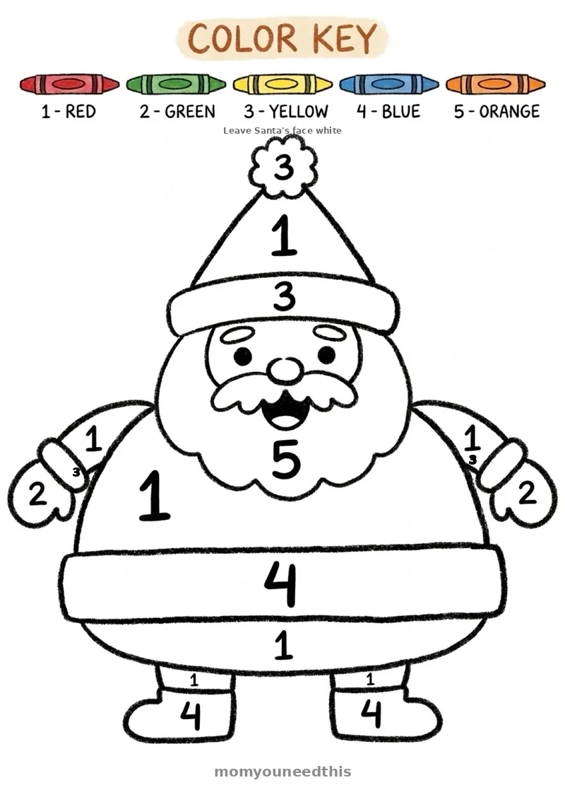

Santa Paint by Numbers Free Color-by-Number Printable, Ages 3+
Quick Answer
This free santa paint by numbers printable is made for ages 3 and up: big numbered sections, large clear numbers, and 5 colors on the shared color key — the full key. The finished picture is a jolly Santa with a big beard, green mittens, a blue belt, and blue boots. One part needs no crayon at all: the face is the white of the paper itself, so Santa's face appears by being left alone.
At a Glance
- Activity: Santa Paint by Numbers
- Ages: 3+
- Colors: 5 (1 = Red, 2 = Green, 3 = Yellow, 4 = Blue, 5 = Orange)
- Sections: Extra-large, numbered
- Supplies: Printed sheet + crayons
- Time: ~15 min

🎨 Color Key for This Sheet
This sheet uses 5 colors from the shared key. The numbers mean the same thing on every sheet — 1 is always red, 2 is always green, and so on.
| Number | Color | What it colors |
|---|---|---|
| 1 | Red | hat, arms, and suit |
| 2 | Green | mittens |
| 3 | Yellow | hat brim and pom-pom |
| 4 | Blue | belt and boots |
| 5 | Orange | beard |
The beard is orange on this sheet — its own color, so kids can spot the big section fast.
🖍️ How to Color This Sheet
- Set out the crayons. All 5 colors from the key — red, green, yellow, blue and orange. Santa uses the whole key, so the full set goes on the table.
- Point at the key together. “1 is red” — find Santa's suit and hold the red crayon over it. The suit is the sheet's biggest red area, and one demo there teaches the whole game.
- Let them work in any order. All the 1s first and dress Santa early, or save the suit for last — both are correct. The rule is just: number matches color. (The beard is 5 — orange. The face gets no number and no color — it stays paper-white.)
- Say the numbers and colors out loud. “That's a 2 — green mittens!” turns each section into a tiny number-and-color quiz.
🧠 What Kids Learn From This Santa Sheet
Santa is the most detailed figure in this set of sheets, and what he teaches is part-whole thinking at a character's scale. Mittens, belt, boots, suit, hat — each is a separate matching problem, and the child has to keep the whole Santa in mind while solving them one at a time. That juggling — local task, global picture — is the same attention reading a page of text will later demand.
He also teaches the set's most elegant lesson: sometimes the right move is no crayon at all. The face is not in the key because it is the paper's own white. Children who grasp that — that leaving a space blank can be the correct, deliberate choice — have understood something about how pictures are made that goes well beyond paint by numbers.
The find-match-fill loop runs throughout, with the red suit providing long, satisfying stretches of one color and the mittens, belt and boots arriving as small blue and green events along the way.
🎨 Make It Your Own
The color key is a starting point, not a rule. Once your child has colored Santa the “right” way — red suit, green mittens, blue belt and boots — print another copy and let them restyle him: a purple suit, a pink beard (on the wild copy, even the face can take a color, gloriously), Santa in the colors of a favorite sports team. He has worn every color in advertising history; he can handle it.
A gentler variation: keep Santa classic and color only the background differently, or add falling snow with a white crayon on colored paper. The wild copy is also the place to practice the details — a steadier hand on the second Santa is a common and satisfying discovery.
🖍️ More Paint by Numbers Sheets
Try another sheet — same color key, new picture.
👨👩👧 A Quiet Activity That Actually Works
Santa is the December sheet with the longest attention span. Five colors, a detailed figure, and the most beloved character in a preschooler's year add up to an activity that can hold a child through a grown-up phone call, a pie in the oven, or the wait for visitors to arrive. He is the sheet to choose when the quiet time needs to stretch.
He is also the one most likely to be given away. A hand-colored Santa is a card, a place card, and a grandparent gift in one. Print him on cardstock if he is destined for the mail — and print two, because the first one rarely makes it out of the house.
❓ Santa Paint by Numbers FAQs
How does the santa paint by numbers sheet work?
Each section of the Santa picture has a number. Match the number to the color key (1 = Red, 2 = Green, 3 = Yellow, 4 = Blue, 5 = Orange), pick up that crayon, and color the section. The suit is red (1), the mittens are green (2), and the belt and boots are blue (4). Santa's beard is 5 — orange. His face has no number — it stays the white of the paper, so leave it uncolored.
What age can kids do this santa paint by numbers sheet?
Ages 3 and up. This sheet uses 5 colors and extra-large numbered sections, so preschoolers can manage it — the suit is a big, forgiving area. Santa is the most detailed sheet in the set, so younger children may take two sittings; the face needs no work at all, which helps.
Is this santa paint by numbers printable free?
Yes — completely free, no signup or email required. Download the PDF, print it, and color it as many times as you like. Finished Santas make excellent homemade Christmas cards.
📚 Keep Exploring
- 🎨 All Paint by Numbers Sheets 8 free color-by-number printables for kids.
- ✏️ Drawing Tutorials 76 free step-by-step drawing tutorials for kids.
- 🎁 Free Resources Free printables and resources for busy moms.